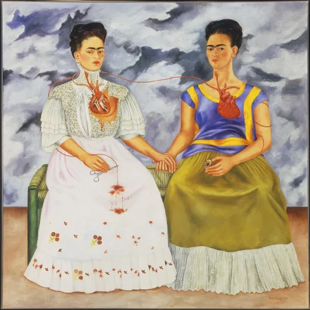
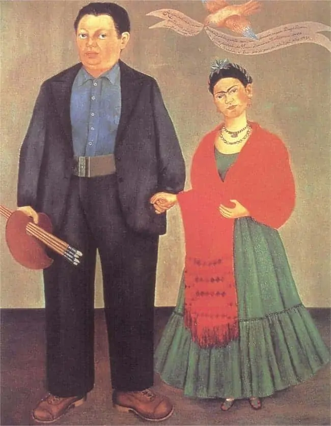
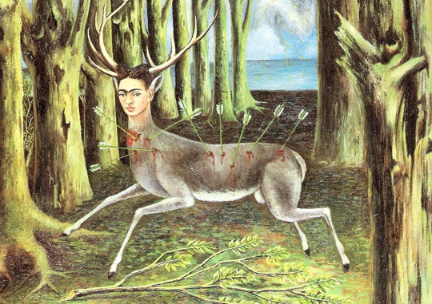

1.

2.

3.

4.
Фрида Кало
1907г. - 1954г.
Магдалена Кармен Фрида Кало и Калдерон е мексиканска художничка, представителка на т. нар. „наивистично изкуство“,известна с непокорния си дух и неконвенционалния си стил както в изкуството, така и в личния си живот. Нейното творчество е смесица от реализъм, символизъм и сюрреализъм, примесено с мексикански национализъм и фолклор. Съпруга е на известния мексикански стенописец Диего Ривера. Авторка е на 143 картини, 55 от които са автопортрети.